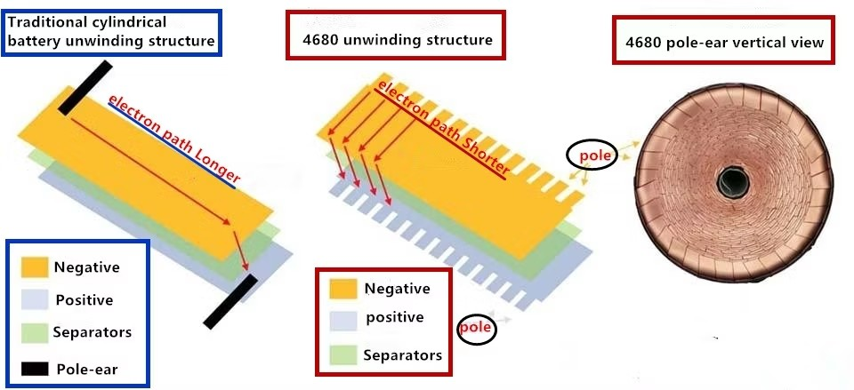
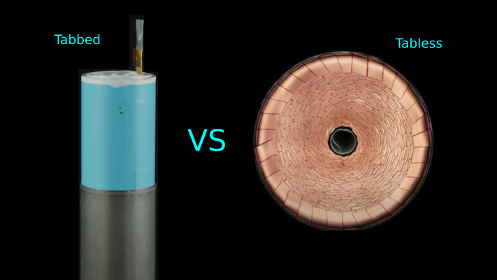
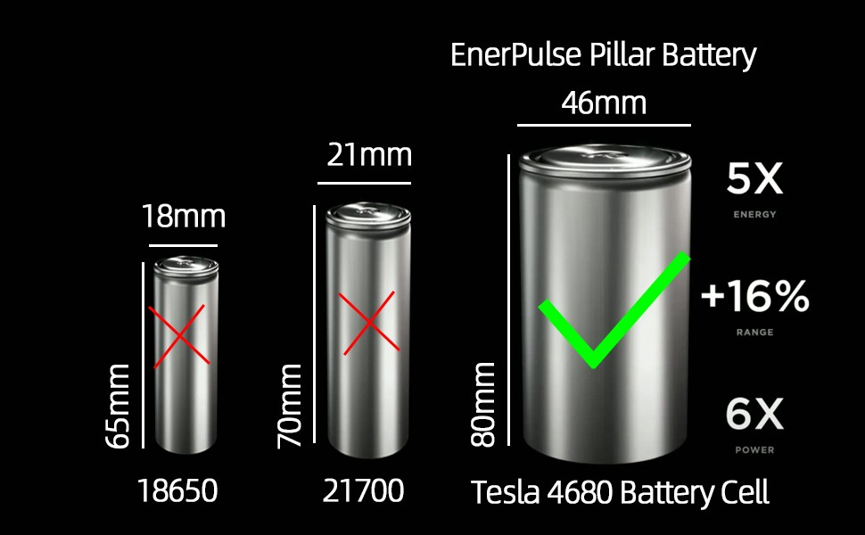

Tesla's unveiling of the 4680 battery cell in 2020 marked a significant milestone in the evolution of electric vehicle (EV) technology. This larger-format cylindrical cell, measuring 46mm in diameter and 80mm in height, promises to revolutionize battery performance and significantly impact the EV industry. This article delves into the key design features, manufacturing intricacies, and material choices of the 4680 cell, drawing comparisons with conventional battery designs.
1. Unique Design Features: A Focus on Full-Pole Ears and Manufacturing Challenges
The 4680 cell incorporates several innovative design features, most notably the "full-pole ear" architecture.
Full-Pole Ear Design:
- Traditional cylindrical cells utilize limited tabs to connect the electrodes to the external circuit.
- The 4680 cell, however, employs a "full-pole ear" design, where numerous small tabs are distributed across the entire electrode surface.
- This significantly reduces internal resistance, enhancing power output, fast charging capabilities, and overall performance.
- However, this design necessitates a significant increase in the number of laser cutting processes, posing challenges in manufacturing efficiency and precision.

Manufacturing Complexity:
The 4680 cell's unique design presents several manufacturing challenges:
- Collector Plate Design: Tesla's initial design utilized a petal-shaped collector plate, while domestic manufacturers often employ spot welding techniques.
- Full-Pole Ear Welding: Welding numerous small tabs to the collector plate requires high precision and can be susceptible to issues like inconsistent welding, short circuits, and potential for material fatigue.
- Flattening the Pole Ear: Flattening the pole ear for optimal contact with the collector plate is a critical step that requires careful control to prevent damage to the electrode material and ensure consistent performance.
Shell Design:
The 4680 cell utilizes a thicker shell compared to traditional 2170 cells. While this enhances structural integrity, it also increases the overall weight of the battery.

2. Material Choices: High Nickel and Dry Electrode Technology
- High Nickel Cathode: Tesla employs high-nickel NCM811 cathode materials in its 4680 cells, maximizing energy density and driving the demand for high-nickel materials within the industry.
- Dry Electrode Technology: The use of dry electrode technology in the negative electrode can improve cell consistency and potentially enhance energy density. However, the first-generation Tesla 4680 cells reportedly did not utilize silicon in the negative electrode, likely due to the complexities of integrating silicon within the 4680 cell design.
3. Comparison with Conventional Cylindrical Cells
- Size and Capacity: The 4680 cell's larger size and improved design enable significantly higher energy density compared to smaller cylindrical cells like 18650 and 21700.
- Manufacturing Complexity: The 4680 cell's complex design and manufacturing processes present greater challenges compared to traditional cylindrical cells.
- Cost Considerations: While the 4680 cell aims to reduce overall battery pack costs, the increased manufacturing complexity and the use of high-nickel materials can contribute to higher production costs.

Conclusion
The Tesla 4680 cell represents a significant advancement in battery technology, pushing the boundaries of energy density, power output, and charging speed. However, its successful commercialization relies on overcoming the challenges associated with its unique design and manufacturing processes. Continued research and development efforts, along with advancements in manufacturing technologies, will be crucial for realizing the full potential of the 4680 cells and driving the next wave of innovation in the electric vehicle industry.